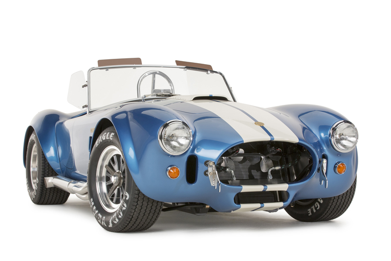

Descubre tu coche

AC Cobra es un automóvil deportivo anglo-estadounidense construido en los años de 1962 a 1966 por el fabricante AC Cars. En contra de la creencia popular, no fue este el primer automóvil en utilizar un chasis ligero y una carrocería de aluminio europeos y un potente motor V8 estadounidense, pero posiblemente haya sido el más famoso.